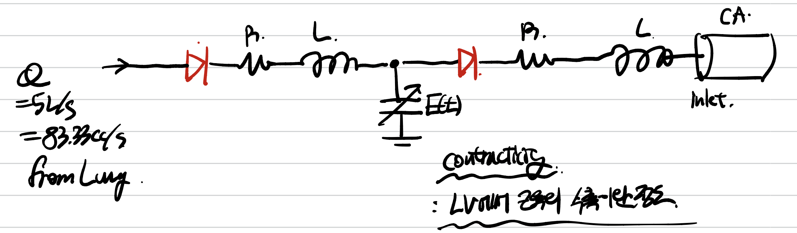

<!DOCTYPE html>
<html lang="ko" data-theme="light">
<head>
  <meta charset="utf-8">
  <meta name="viewport" content="width=device-width, initial-scale=1">
  <title>Lumped Parameter modeling_ coronary artery inlet boundary condition | Sehyeog Kim</title>
  <link rel="stylesheet" href="../../../../assets/css/style.css">
  <script>!function(){var t=localStorage.getItem("theme")||"light";document.documentElement.setAttribute("data-theme",t)}();</script>
</head>
<body>
  <button class="theme-toggle" aria-label="Toggle theme"><svg class="icon-sun" viewBox="0 0 24 24" fill="none" stroke="currentColor" stroke-width="2" stroke-linecap="round" stroke-linejoin="round"><circle cx="12" cy="12" r="5"/><line x1="12" y1="1" x2="12" y2="3"/><line x1="12" y1="21" x2="12" y2="23"/><line x1="4.22" y1="4.22" x2="5.64" y2="5.64"/><line x1="18.36" y1="18.36" x2="19.78" y2="19.78"/><line x1="1" y1="12" x2="3" y2="12"/><line x1="21" y1="12" x2="23" y2="12"/><line x1="4.22" y1="19.78" x2="5.64" y2="18.36"/><line x1="18.36" y1="5.64" x2="19.78" y2="4.22"/></svg><svg class="icon-moon" viewBox="0 0 24 24" fill="none" stroke="currentColor" stroke-width="2" stroke-linecap="round" stroke-linejoin="round"><path d="M21 12.79A9 9 0 1 1 11.21 3 7 7 0 0 0 21 12.79z"/></svg></button>

  <header class="mobile-header">
    <span class="site-title">Sehyeog Kim</span>
    <button class="menu-toggle" aria-label="Menu">&#9776;</button>
  </header>
  <div class="sidebar-overlay"></div>

  <div class="site-wrapper">
    <aside class="sidebar">
      <div class="sidebar-bg">
        
      </div>
      <div class="sidebar-profile">
        
        <h1 class="profile-name">Sehyeog Kim</h1>
        <p class="profile-bio">AI &amp; Computational Engineering<br>Personal Blog</p>
        <div class="profile-links">
          <a href="https://github.com/Sehyeogkim" target="_blank" rel="noopener">
            <svg viewBox="0 0 16 16" width="15" height="15" fill="currentColor"><path d="M8 0C3.58 0 0 3.58 0 8c0 3.54 2.29 6.53 5.47 7.59.4.07.55-.17.55-.38 0-.19-.01-.82-.01-1.49-2.01.37-2.53-.49-2.69-.94-.09-.23-.48-.94-.82-1.13-.28-.15-.68-.52-.01-.53.63-.01 1.08.58 1.23.82.72 1.21 1.87.87 2.33.66.07-.52.28-.87.51-1.07-1.78-.2-3.64-.89-3.64-3.95 0-.87.31-1.59.82-2.15-.08-.2-.36-1.02.08-2.12 0 0 .67-.21 2.2.82.64-.18 1.32-.27 2-.27.68 0 1.36.09 2 .27 1.53-1.04 2.2-.82 2.2-.82.44 1.1.16 1.92.08 2.12.51.56.82 1.27.82 2.15 0 3.07-1.87 3.75-3.65 3.95.29.25.54.73.54 1.48 0 1.07-.01 1.93-.01 2.2 0 .21.15.46.55.38A8.013 8.013 0 0016 8c0-4.42-3.58-8-8-8z"/></svg> GitHub
          </a>
        </div>
      </div>
      <nav class="sidebar-nav">
        <a href="/" class="nav-item nav-home">Home</a>
        <span class="nav-group-label">AI</span>
        <a href="/blog/ai/agentic-ai-theory/" class="nav-item">Agentic_AI_Theory<span class="nav-post-count">8</span></a>
        <a href="/blog/ai/deep-learning/" class="nav-item">Deep-learning<span class="nav-post-count">14</span></a>
        <a href="/blog/ai/machine-learning/" class="nav-item">Machine_Learning<span class="nav-post-count">11</span></a>
        <a href="/blog/ai/sensitivity-analysis/" class="nav-item">Sensitivity_Analysis<span class="nav-post-count">3</span></a>
        <span class="nav-group-label">AI_Application</span>
        <a href="/blog/ai_application/claude/" class="nav-item">Claude<span class="nav-post-count">2</span></a>
        <span class="nav-group-label">BioMechanics</span>
        <a href="/blog/biomechanics/blood-flow-and-metabolism/" class="nav-item active">Blood-Flow-and-Metabolism<span class="nav-post-count">12</span></a>
        <a href="/blog/biomechanics/cardiovascular-diseases/" class="nav-item">CardioVascular_Diseases<span class="nav-post-count">8</span></a>
        <span class="nav-group-label">Mechanical_Engineering</span>
        <a href="/blog/mechanical-engineering/computational-linear-algebra/" class="nav-item">Computational-Linear-Algebra<span class="nav-post-count">15</span></a>
        <a href="/blog/mechanical-engineering/computational-fluid-dynamics/" class="nav-item">Computational_Fluid_Dynamics<span class="nav-post-count">14</span></a>
        <a href="/blog/mechanical-engineering/continuum-mechanics/" class="nav-item">Continuum-Mechanics<span class="nav-post-count">9</span></a>
        <a href="/blog/mechanical-engineering/engineering-mathematics/" class="nav-item">Engineering_Mathematics<span class="nav-post-count">14</span></a>
        <a href="/blog/mechanical-engineering/finite-element-method/" class="nav-item">Finite-Element-Method<span class="nav-post-count">1</span></a>
        <a href="/blog/mechanical-engineering/fluid-mechanics/" class="nav-item">Fluid_Mechanics<span class="nav-post-count">18</span></a>
        <a href="/blog/mechanical-engineering/gas-dynamics/" class="nav-item">Gas_Dynamics<span class="nav-post-count">24</span></a>
        <a href="/blog/mechanical-engineering/heat-transfer/" class="nav-item">Heat-transfer<span class="nav-post-count">8</span></a>
        <a href="/blog/mechanical-engineering/solid-mechanics/" class="nav-item">Solid_Mechanics<span class="nav-post-count">25</span></a>
        <a href="/blog/mechanical-engineering/thermodynamics/" class="nav-item">Thermodynamics<span class="nav-post-count">14</span></a>
        <a href="/blog/mechanical-engineering/viscous-flow/" class="nav-item">Viscous_Flow<span class="nav-post-count">28</span></a>
      </nav>
    </aside>

    <main class="main-content">
      <div class="breadcrumb"><a href="/">Home</a><span class="sep">/</span><a href="/blog/biomechanics/">BioMechanics</a><span class="sep">/</span><a href="/blog/biomechanics/blood-flow-and-metabolism/">Blood-Flow-and-Metabolism</a><span class="sep">/</span><span>Lumped Parameter modeling_ coronary artery inlet boundary condition</span></div>
<a href="/blog/biomechanics/blood-flow-and-metabolism/" class="back-link">&larr; Back to Blood-Flow-and-Metabolism</a>
<div class="page-header"><h1>Lumped Parameter modeling_ coronary artery inlet boundary condition</h1></div>
<div class="post-meta"><span class="meta-item"><span class="meta-label">Date:</span> 2024-11-02</span><span class="meta-item"><span class="meta-label">Category:</span> Blood-Flow-and-Metabolism</span><span class="meta-item"><span class="meta-label">Source:</span> <a href="https://jeffdissel.tistory.com/m/122" target="_blank" rel="noopener">link</a></span></div>
<article class="post-content"><p>Lumped Parameter modeling_ coronary artery inlet boundary condition<br />
지난시간까지<br />
Coronary Artery에 대해서 살펴보았고,<br />
이제<br />
관상동맥 혈액유동을 분석해보자.<br />
유동분석을 쉽게 묘사하는 modeling 방법인 바로<br />
Lumped parameter method<br />
(혈액유동을 간략하게 묘사하기 위해,<br />
전기회로로 표현하는 방식)<br />
관상동맥으로 혈액이 공급되는 과정을 지난 혈액순환 과정에서 살펴보았듯이,<br />
Lung -&gt; Left Antrium -&gt; Left ventricle -&gt; Aorta<br />
로 이어 진다.<br />
<br />
중요한 것은 역류 방지를 위한 두개의 valve가 이 사이에 존재한다.<br />
Mitral Valve, Aorta Valve (위 그림 살구색)<br />
<br />
혈액 유동 순서<br />
이를 Lumped Parameter model로 표현하게 되면,<br />
다음과 같이 표현 할 수 있다.<br />
<br />
왜 이렇게 표현 되는지를 천천히 살펴보자.<br />
폐부터 시작해보자.<br />
폐로부터 나오는 혈액의 Flow rate는<br />
5L/s (83.33cc/s)로 일정하다는 것은 임상적으로 증명되었다.<br />
이후, Mitral valve는 역류를 허용 하지 않기 때문에,<br />
전기회로의 다이오드와 똑같이 역방향의 전류를 허용하지 않는다.<br />
valve를 통과한 혈액의 유동은<br />
심실의 3가지 요소에 의해 결정된다.<br />
1. Resistance(R)<br />
R =<br />
ΔP/Q<br />
혈액의 유동과 벽과의 마찰로 인한,<br />
압력손실은 단순하게 Q와 비례하다고 표현 할 수 있다.<br />
2. Inductance(L)<br />
혈액의 관성을 표현하는 방법이다.<br />
쉽게 생각해보자.<br />
3m/s 로 흐르고 있는 혈액을 5m/s 로 만들기 위해서는<br />
5m/s로 흐르기 위한 inlet, outlet 혈관의 압력차이만 부여해주면 될까?<br />
아니다, 혈액의 관성으로 3m/s로 계속해서 유지하려는 힘이 존재하기 때문에 이를 위해서<br />
더 강력한 압력차이를 부여해주어야 한다.<br />
방금한 설명을 수식으로 나타내면 다음과 같다.<br />
Resistance에 의한 압력차이보다, 혈액의 관성을 고려한 압력차이를<br />
주어야 우리가 원하는 유동이 흐르게 되는 것이다.<br />
<br />
3. Contractility: E(t)<br />
이는 Left ventricle 의 근유의 수축 이완 정도를 나타낸다.<br />
<br />
그래프의 형태는 무조건 모든 인간이 다음과 같으며,<br />
Maxium E(t)의 경우는 사람마다 다르다.<br />
이후 똑같이 Aorta Valve를 지나,<br />
목표하는 관상동맥까지 혈액의 유동의<br />
저항, Inductanc까지 고려해주면<br />
우리가 원하는 Inlet condition을 유도할 수 있게 된다.</p></article>
      <footer class="site-footer">
        <p>&copy; 2026 Sehyeog Kim</p>
      </footer>
    </main>
  </div>
  <script src="../../../../assets/js/main.js"></script>
</body>
</html>